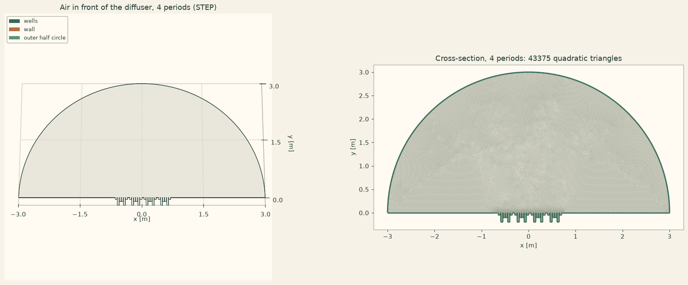

Docs › Examples › Schroeder diffuser
Pressure acoustics, scattering · 2D
Schroeder diffuser
A quadratic-residue diffuser set into a wall spreads a reflected sound wave over many directions; one period and four periods are compared.

What it computes
OneSimulation cuts the air in front of the diffuser from STEP plates and solves the two-dimensional Helmholtz equation with quadratic triangles at 250 Hz to 2 kHz; the incident wave enters through the cylindrical-wave admittance of the outer half circle, and the field of the flat wall is subtracted to give the scattered wave. Polar responses and diffusion coefficients come from receivers on a half circle. The script that builds the STEP file comes with the notebook.
What it checks
At the design frequency of 500 Hz the four-period polar response matches the Kirchhoff model of Cox and D'Antonio to 0.3 dB in its main lobes and the diffusion coefficient to 0.216 against 0.218; at 1 kHz the coefficients are 0.187 against 0.213. Away from the design frequency and for the single period the approximate model differs by 1-2 dB in median, as expected from the well coupling and edge diffraction it leaves out.
Geometry
The notebook starts at the import of the CAD files schroeder_diffuser_scattering.step, schroeder_diffuser_scattering_single.step: STEP (AP242), readable by any CAD program, with the names of the faces that the boundary conditions use. Put them next to the notebook.

The geometry script
The script schroeder_diffuser_scattering_geometry.py builds the geometry with the CAD objects of OneSimulation and writes the files. Change a dimension there, run it, and run the notebook again.
"""Geometry of the OneSimulation example "Schroeder diffuser".
Builds, as thin plates with the CAD objects of OneSimulation, the air in front of a rigid wall with
a quadratic-residue diffuser set into it, out to a half circle of radius 3 m. The diffuser has
N = 7 wells per period, 45 mm wide with 5 mm fins, and depths (n^2 mod 7) x 49 mm for a design
frequency of 500 Hz. schroeder_diffuser_scattering.step holds four periods,
schroeder_diffuser_scattering_single.step one; both name the faces outer, wall and wells.
"""
from onesim.cad.d2 import Path, Profile, Segment
from onesim.cad.d3 import Prism
cell, fin, unit, outer = 0.05, 0.005, 343.0 / 500.0 / 14, 3.0
depths = [(n * n % 7) * unit for n in range(7)]
for name, periods in (("schroeder_diffuser_scattering", 4), ("schroeder_diffuser_scattering_single", 1)):
left = -periods * 7 * cell / 2
segments = [Segment((left, 0.0), name="wall")]
for index in range(7 * periods):
depth, start = depths[index % 7], left + index * cell
if depth > 0:
segments += [Segment((start + fin / 2, 0.0), name="wells"), Segment((start + fin / 2, -depth), name="wells"),
Segment((start + cell - fin / 2, -depth), name="wells"), Segment((start + cell - fin / 2, 0.0), name="wells")]
segments += [Segment((-left, 0.0), name="wells"), Segment((outer, 0.0), name="wall"),
Segment((-outer, 0.0), center=(0.0, 0.0), name="outer")]
Prism(profile=Profile(Path((-outer, 0.0), tuple(segments))), height=0.01).save(f"{name}.step")The notebook
The complete notebook, cell by cell. Run it to produce the figures and the comparison printout.
M. R. Schroeder (J. Acoust. Soc. Am. 57, 149, 1975) proposed wells whose depths follow the quadratic-residue sequence \(s_n=n^2\bmod N\): at the design frequency \(f_0\) a well of depth \(d_n=s_n\lambda_0/(2N)\) reflects with the phase \(e^{-2ikd_n}\), and the Fourier transform of that phase pattern is flat - the reflected energy goes equally into all diffraction lobes. Here \(N=7\), \(f_0=500\) Hz, the wells are 45 mm wide between 5 mm fins, and the deepest is 196 mm. The model is two-dimensional (a cut across long wells); a plane wave falls perpendicularly on the wall.
The field is split into the incident wave reflected by a flat rigid wall, \(p_b=2p_0\cos ky\), and the scattered wave \(p_s=p-p_b\) that the wells add. The air is a half disc of radius \(R=3\) m.
| boundary | condition | |---|---| | wall, fins and wells | rigid, \(\partial p/\partial n=0\) | | half circle \(r=R\) | \(p_s\) outgoing: \(v_n=-i\,\dfrac{H_1^{(2)}(kR)}{H_0^{(2)}(kR)}\,\dfrac{p-p_b}{\rho_0c}\) |
Reference. The standard design model of diffusers (T. J. Cox and P. D'Antonio, Acoustic Absorbers and Diffusers, 3rd ed., CRC Press 2017, ch. 9) treats the surface as locally reacting with the reflection factor \(R(x)=e^{-2ikd(x)}\) and adds up its contributions in the Kirchhoff approximation,
It ignores the coupling between neighbouring wells and diffraction at the edges, so it is approximate: good near the design frequency and in the main lobes, worse at low frequency and towards grazing angles. As a summary number both are reduced to the diffusion coefficient \(d=\big[(\sum_i I_i)^2-\sum_i I_i^2\big]/\big[(n-1)\sum_i I_i^2\big]\) of the scattered intensities \(I_i=|p_s|^2\) on \(n\) equally spaced receivers (ISO 17497-2), 0 for a single direction and 1 for perfectly even scattering.
import numpy as np
from onesim.cad.exchange import load
from onesim.meshing import TriangularMesher
from onesim.numerics.fem import FiniteElement, Lagrange
from onesim.physics.acoustics import (AcousticHarmonicPressure,
ComplexPressurePencil,
ConstantPressureForms,
PressureAdmittanceBoundary,
PressureTraceSamples,
SampledPressureAdmittanceForms,
SampledPressureVolumeForms,
pressure_space_volume_samples)
from onesim.visualization import plots, theme
from scipy.sparse.linalg import spsolve
from scipy.special import hankel2
theme.set()
c0, rho0, incident = 343.0, 1.204, 1.0
impedance = rho0 * c0
cell, fin, unit = 0.05, 0.005, c0 / 500.0 / 14
frequencies = np.array([250.0, 500.0, 1000.0, 2000.0])Geometry and mesh
load reads the air in front of four periods and of one period of the diffuser; section cuts each at half thickness. The triangles are a sixth of the wavelength at 2 kHz (29 mm) in the open air and 8 mm in the wells.
parts = {"4 periods": load("schroeder_diffuser_scattering.step"), "1 period": load("schroeder_diffuser_scattering_single.step")}
planes = {name: part.section((0, 0, 1), origin=(0, 0, 0.005)) for name, part in parts.items()}
outer = planes["1 period"].size[0] / 2
h = c0 / frequencies.max() / 6
half_width = {"4 periods": 0.7, "1 period": 0.175}
meshes = {name: TriangularMesher(target_size=h, size_field=lambda p, w=half_width[name]: np.minimum(
h, 0.008 + 0.2 * np.hypot(np.maximum(np.abs(p[:, 0]) - w, 0.0), np.maximum(p[:, 1], 0.0)))).generate(plane)
for name, plane in planes.items()}
fig = plots.figure(1, 2, size=(16, 6))
plots.geometry(parts["4 periods"], selection={"wells": parts["4 periods"].boundaries.wells, "wall": parts["4 periods"].boundaries.wall,
"outer half circle": parts["4 periods"].boundaries.outer},
labels=False, camera=plots.Camera(elevation=70, azimuth=-90), title="Air in front of the diffuser, 4 periods (STEP)", ax=fig[0])
plots.mesh(meshes["4 periods"], groups=("all",), legend=False,
title=f"Cross-section, 4 periods: {meshes['4 periods'].cell_count} quadratic triangles", ax=fig[1])
plots.show()Model
Quadratic Lagrange elements; SampledPressureVolumeForms integrates the volume forms, and the half circle carries the cylindrical-wave admittance \(Y\) with the load \(\int\big(\rho_0^{-1}\partial_np_b+i\omega Yp_b\big)\phi_i\,\mathrm dS\) through which the incident wave enters. AcousticHarmonicPressure solves the four frequencies.
def solve_diffuser(name):
"""Pressure at the four frequencies in front of one diffuser."""
plane, mesh = planes[name], meshes[name]
space = FiniteElement(element=Lagrange(order=2)).bind_space(mesh)
volume = ConstantPressureForms(*SampledPressureVolumeForms(
size=space.dof_count, samples=lambda: pressure_space_volume_samples(space),
inverse_density=lambda omega, sample: 1 / rho0, compressibility=lambda omega, sample: 1 / impedance / c0)(0.0))
rim = [PressureTraceSamples(space.cell_dofs[owner], points, weights, basis)
for owner, points, weights, _, basis, _ in map(space.trace_data, mesh.facets(plane.boundaries.outer))]
trace = SampledPressureAdmittanceForms(size=space.dof_count, samples=lambda: iter(rim), admittance=lambda omega, sample: 1.0)(0.0)
admittance = lambda omega: -1j * hankel2(1, omega.real * outer / c0) / hankel2(0, omega.real * outer / c0) / impedance
y = space.dof_coordinates[:, 1]
flat = lambda omega: 2 * incident * np.cos(omega.real / c0 * y)
flux = lambda omega: -2 * incident * omega.real / c0 * np.sin(omega.real / c0 * y) * y / outer
pressure = AcousticHarmonicPressure(
operator=ComplexPressurePencil(volume, boundary=PressureAdmittanceBoundary(lambda omega: admittance(omega) * trace)),
angular_frequencies=2 * np.pi * frequencies, linear_solver=spsolve,
load=lambda omega: trace @ (flux(omega) / rho0 + 1j * omega * admittance(omega) * flat(omega))).run().pressure
return dict(space=space, mesh=mesh, pressure=pressure)
runs = {name: solve_diffuser(name) for name in planes}
scattered = lambda name, points: np.asarray(runs[name]["space"].evaluate(runs[name]["pressure"].T, points)) - 2 * incident * np.cos(
2 * np.pi * frequencies / c0 * points[:, 1:2])Reference
The Kirchhoff integral over the diffuser surface with 24 Gauss points across every well.
nodes, weights = np.polynomial.legendre.leggauss(24)
kirchhoff = {}
for name, periods in (("4 periods", 4), ("1 period", 1)):
left, width = -periods * 7 * cell / 2, cell - fin
wells = [(left + i * cell + cell / 2, (i % 7) ** 2 % 7 * unit) for i in range(7 * periods)]
x_source = np.concatenate([centre + width / 2 * nodes for centre, _ in wells])
depth = np.repeat([d for _, d in wells], len(nodes))
kirchhoff[name] = lambda points, f, x_source=x_source, depth=depth: (
(np.exp(-4j * np.pi * f / c0 * depth) - 1) * np.tile(weights, len(depth) // len(weights)) * width / 2
* (1 + points[:, 1:2] / np.hypot(points[:, :1] - x_source, points[:, 1:2])) / 2
* hankel2(0, 2 * np.pi * f / c0 * np.hypot(points[:, :1] - x_source, points[:, 1:2]))).sum(axis=1)Results
Polar responses on a half circle of radius 2.8 m, normalised by their maximum, the level difference to the Kirchhoff model in the main lobes, and the diffusion coefficients.
theta = np.radians(np.linspace(-90.0, 90.0, 37))
receivers = 2.8 * np.column_stack((np.sin(theta), np.cos(theta)))
fine_theta = np.radians(np.linspace(-90.0, 90.0, 361))
ring = 2.8 * np.column_stack((np.sin(fine_theta), np.cos(fine_theta)))
diffusion = lambda values: (np.sum(values) ** 2 - np.sum(values**2)) / ((len(values) - 1) * np.sum(values**2))
polar, model = {}, {}
print(" case f [Hz] diffusion coeff. FE Kirchhoff |level difference| where both above -10 dB")
for name in planes:
on_ring, at_receivers = np.abs(scattered(name, ring)) ** 2, np.abs(scattered(name, receivers)) ** 2
for i, f in enumerate(frequencies):
reference_ring = np.abs(kirchhoff[name](ring, f)) ** 2
polar[name, f] = 10 * np.log10(on_ring[:, i] / on_ring[:, i].max())
model[name, f] = 10 * np.log10(reference_ring / reference_ring.max())
main = (polar[name, f] > -10) & (model[name, f] > -10)
print(f" {name:10s} {f:7.0f} {diffusion(at_receivers[:, i]):19.3f} {diffusion(np.abs(kirchhoff[name](receivers, f)) ** 2):9.3f}"
f" median {np.median(np.abs(polar[name, f] - model[name, f])[main]):.1f} dB, largest {np.max(np.abs(polar[name, f] - model[name, f])[main]):.1f} dB")Figure
Top: the pressure in front of four periods and inside the wells at the design frequency. Bottom: the polar responses of one and of four periods at 500 Hz and 1 kHz against the Kirchhoff model; four periods split the response into the lobes of the periodic grating.
mesh = meshes["4 periods"]
x, y = np.asarray(mesh.coordinates).T
field = runs["4 periods"]["pressure"][1][:len(x)].real
fig = plots.figure(layout=[["field", "field"], ["one", "four"]], size=(17, 14))
plots.heatmap(x, y, field, triangles=np.asarray(mesh.cells), colormap="diverging", limits=(-2.5, 2.5), xlimits=(-1.6, 1.6), ylimits=(-0.25, 1.6),
label="pressure / p0", title="Pressure in front of four periods and in the wells at 500 Hz (instantaneous)", ax=fig["field"])
for panel, name in (("one", "1 period"), ("four", "4 periods")):
plots.line(np.degrees(fine_theta), {f"{f:.0f} Hz": polar[name, f] for f in (500.0, 1000.0)},
reference={f"{f:.0f} Hz": model[name, f] for f in (500.0, 1000.0)}, ylimits=(-30, 3),
xlabel="angle from the wall normal [deg]", ylabel="scattered level, normalised [dB]",
title=f"{name}: polar response (dashed: Kirchhoff)", legend="lower center", ax=fig[panel])
plots.show()Going further
Change \(N\) or the design frequency in schroeder_diffuser_scattering_geometry.py and write the STEP files again, or let the wave fall obliquely: replace \(p_b\) by the oblique incident plus specularly reflected wave. The same model with an absorbing lining in the wells gives the absorption that deep narrow wells add at low frequency.